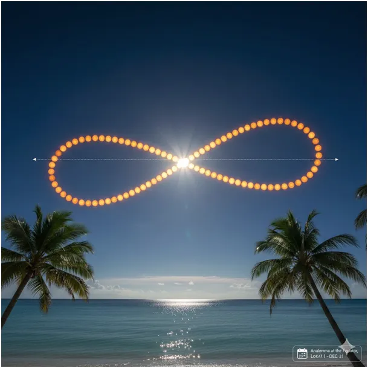
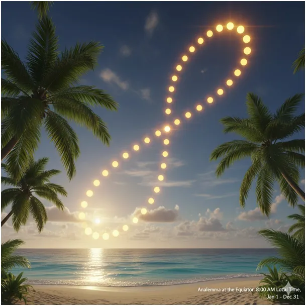
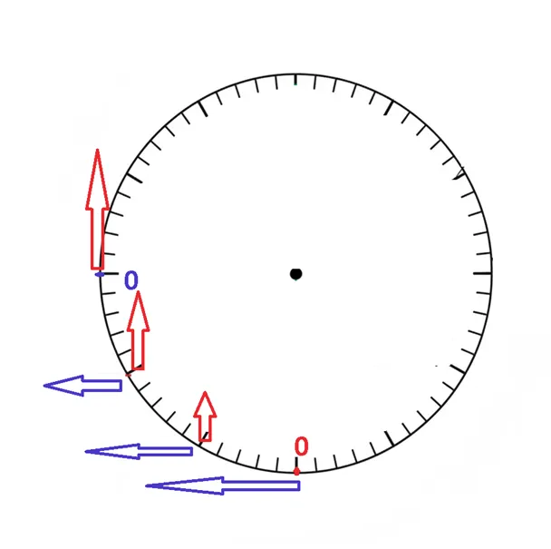
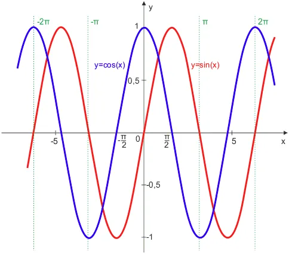
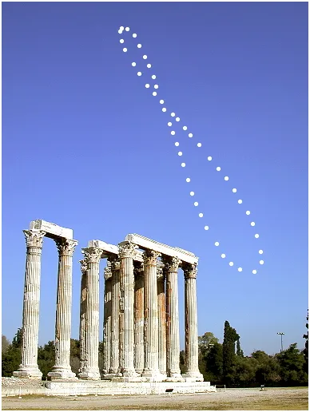
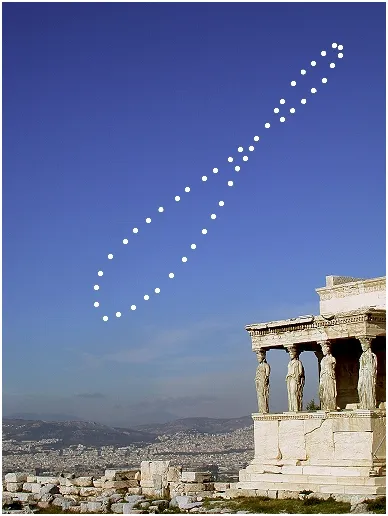

Analemma. Co to za kosmiczne zwierzę i dlaczego zaczyna budzić się wcześniej po Nowym Roku?
Od razu ostrzegam, że pierwszy rysunek jest kłamstwem, został wygenerowany przez AI na życzenie, dopiero drugi, po mojej korekcie jest prawdziwy.


Dziś rozprawię się z pozornie trudnym do zrozumienia zjawiskiem zmiany tempa zmian astronomicznych. Budzi to nasz wewnętrzny sprzeciw, że Ziemia robiąc prawie idealne koła wokół Słońca zimą wpada w dołek niemożności wydłużania dnia, gdy jeszcze w październiku dnia ubywało o wiele minut dziennie.
Zanim to zrobię wyjaśnijmy grafiki z ósemkami robionymi prze Słońce na niebie! Odkryta w starożytności, nazwana przez Greków Analemmą, to roczna, dokładna pozycja Słońca na niebie rejestrowana dokładnie o tej samej godzinie. Tak jest, że południe wypada w południe każdego dnia, czyli moment, w którym Słońce jest najwyżej, ale tylko dwa razy w roku Słonce jest skierowane dokładnie na południe, w marcu i we wrześniu.
Zagadka jest bardzo prosta, Ziemia krąży wokół Słońca a jednocześnie wiruje wokół swej osi. Wyjaśnimy przy okazji pojęcia czasu słonecznego i gwiazdowego. Wyobrażamy sobie duży pokój, jedno okno, na środku stół, naprzeciw okna drzwi. Stojąc naprzeciw okna przed stołem (to Słońce) robimy pół obrotu wokół swej osi i jednocześnie okrążamy stół stając tyłem do okna. To jest model, gdy przez pół roku minęło pół doby. W realu Ziemia w tym czasie wykona ok. 183 obroty (365/2). O co chodzi? W Kosmosie dla Ziemi gwiazdy (ściany pokoju) są nieruchome, Słońce wykonuje pozorny ruch. Ziemia względem gwiazd robi pełen obrót w 23h i 54min, ale musi jeszcze wykonać przez 6 minut ruch wirowy nowego obrotu, aby tym samym południkiem co dzień wcześniej skierować się dokładnie w stronę Słońca, tak mija doba Słoneczna, czyli 23 h i 60 min (24h).
Astronomia to dla ludzkiego umysłu ciągła przygoda, bardzo rozwijająca, dlatego powinna być w szkole od klasy pierwszej do ostatniej i dlatego nie ma jej już w prawie wcale!

Krok drugi: zatem dlaczego dynamika zimy jest tak różna od dynamiki jesieni, skoro wszystko kręci się prawie idealnie tak samo. Pisałem wiele o sinusach i kosinusach, ale użyjmy dziś koła rowerowego z wentylem. Koło wiruje w prawo jak zegar i na początku nasz punkt (wentyl) jest na samym dole (zima). Punkt wiruje ze stałą prędkością, ale gdy spytamy jak szybko się unosi (czerwona składowa ruchu pionowego), to ze smutkiem stwierdzamy, że w najniższym położeniu jego ruch do góry to praktycznie zero. Składowa pozioma (niebieska) ma wtedy swoje maksimum, ale ona nas nie interesuje w na osi pionowej mamy dynamikę długości dnia. Czerwone i niebieski to właśnie sinus i kosinus, nic strasznego! Prawda?

W sposób nie linowy, "Najpierw powoli, jak żółw, ociężale, ruszyła maszyna po szynach ospale,
szarpnęła wagony i ciągnie z mozołem, i kręci się, kręci się koło za kołem..."
Aby już za kilka tygodni: "I biegu przyspiesza, i gna coraz prędzej,
I dudni, i stuka, łomoce i pędzi, A dokąd? A dokąd? A dokąd? Na wprost!
Po torze, po torze, po torze, przez most..."
Tak to nasza składowa pionowa nabierze mocy.
Do tej chwili od 21 grudnia jest zaledwie trzynaście tygodni, a ponad jeden mamy już za sobą. Faza leniwa to tylko 1/3 tego okresu, zatem już po 4 tygodniach, w połowie stycznia przyroda to zauważy i "Agnieszka wypuści skowronka z mieszka"!
Analemma ma jeszcze jedno oblicze, skoro taniec południowego Słońca na niebie to nieregularna ósemka (nawet na równiku) to wschody i zachody Słońca też mają niesymetryczne godziny. Wiemy, że zachód Słońca już od Łucji (13 grudnia) zapada coraz później, ale od jutra wschód Słońca przestanie się opóźniać i Słonce wstanie w Nowy Rok o sekundy wcześniej niż w Sylwestra.

Teraz już wiecie skąd w kalendarzu ta data jest Nowym Rokiem a nie 21/22 grudnia.
Pierwsza grafika Analemmy od AI jest kłamliwa, bo miała pokazać jak jest na równiku i zamiast pokazać to w zenicie (pionowo nad głową) malowniczo, między palmami wpisała ją nad horyzontem. Dopiero druga grafika z równika, ale z godziny 8 rano jest prawdziwa.

W sieci roi się też od fałszywych obrazów Analemmy nad Atenami, musi być pochylona w lewo na naszej półkuli a nie w prawo jak na rysunku ostatnim. Strzeż nas Panie, a szczególnie nasze dzieci, przed AI!
Paweł Klimczewski